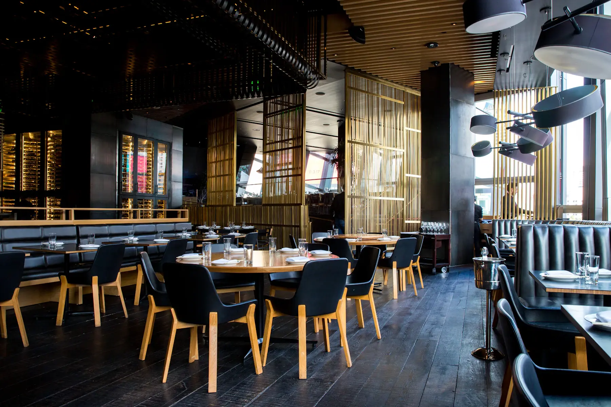

AI answering service vs Google Duplex
Google Duplex helps diners book at your restaurant. TableTalk is the AI phone answering service that helps your restaurant — answering every incoming call, booking OpenTable and Resy reservations, and texting menus for a flat $50/month.
Duplex and TableTalk both use AI to talk on the phone. That's where the similarity ends.
| Who it works for | Google Duplex | TableTalk |
|---|---|---|
| Side of the phone | Makes calls (for diners) | Answers calls (for you) |
| Your missed 6–8 PM rush | Doesn't help | Answers every call |
| Books into OpenTable / Resy | Partial, consumer-side | Yes, natively |
| Texts your menu to guests | No | Every call |
| After-hours coverage | No | 24/7 |
| Price | n/a for restaurants | $50/month, unlimited |
Duplex is a great convenience for diners — but it doesn't answer the phone when a real guest calls you on a Saturday at 7 PM. You still need someone to pick up.
Duplex books for diners on one end. TableTalk answers for you on the other. Run them together and every path into your restaurant — app, web, phone, automated — ends in a booked table.
Google Duplex is a consumer tool that lets diners book reservations by having Google call the restaurant. It helps the caller — it does not help you answer your own phones during the rush. TableTalk is the restaurant-side AI: it answers every call that comes in.
They solve different problems. Duplex books on behalf of diners. TableTalk answers on behalf of your restaurant — catching calls from all sources, booking into OpenTable and Resy, and texting menus. Most restaurants want both sides covered.
Yes. TableTalk never blocks or conflicts with Duplex calls — it answers every call, including automated ones, and keeps your reservation calendar accurate in OpenTable or Resy.
A flat $50 per month with unlimited calls and bookings. First 7 days free, no credit card required, cancel anytime.
AI phone answering for restaurants. $50/month. Setup in 5 minutes.
Start your free trial